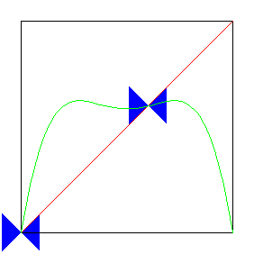

| A period-doubling bifurcation occurs when |
| the graph of L(x) passes from inside the blue bowtie to outside, crossing over the diagonal line. |
| This introduces two new fixed points, both stable, at least before s increases very much. |
| For this |
|  |
| Click the animation to stop. |
Return to Determinisitic Chaos.